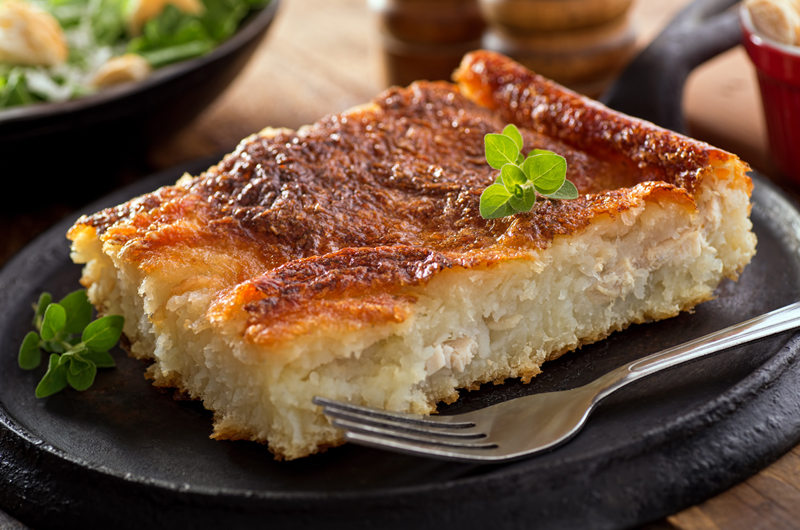

Rappie Pie

This amazing pie comes to you from Canada, as the traditional
dish it is. It's amazing how simple it is to make and will
leave you with leftovers if you aren't already making it
for a family gathering.
The over all cooking time will take you around 3 hours but will give you a lot of servings of wonderful pie.
Ingredients
- Butter - 2 tbsp
- Onions - 2 chopped
- Chicken Stock - 4 qts
- Potatoes - 4.5 kgs
- Salt - 2 tbsp
- Pepper - 1 tbsp
Instructions
- Preheat your oven to 200°C. Grease a baking pan.
- Add some butter to a pan over medium heat; saute the onion until dark brown
- Bring Chicken stock to a boil in a large pot; add in chicken breasts and reduce heat to simmer until chicken is no longer pink at the center.
- Remove chicken stock from heat and set chicken breasts on a separate plate.
- Boil, peel and smash the potatoes using a cloth to remove any and all liquid.
- Stir in Salt and Pepper into the dry potato mash, set a layer of potato mash at the bottom of the baking pan.
- Add in enough Chicken stock to the potato smash to make a thick consistency, reserve the rest of the chicken stock.
- Set the Chicken breasts and the caramelized onions on the bottom layer of the baking pan.
- Add in the rest potato mash on top of the Chicken and Onions
- Bake in the preheated oven until golden brown, reheat the chicken stock and add as much as desired.